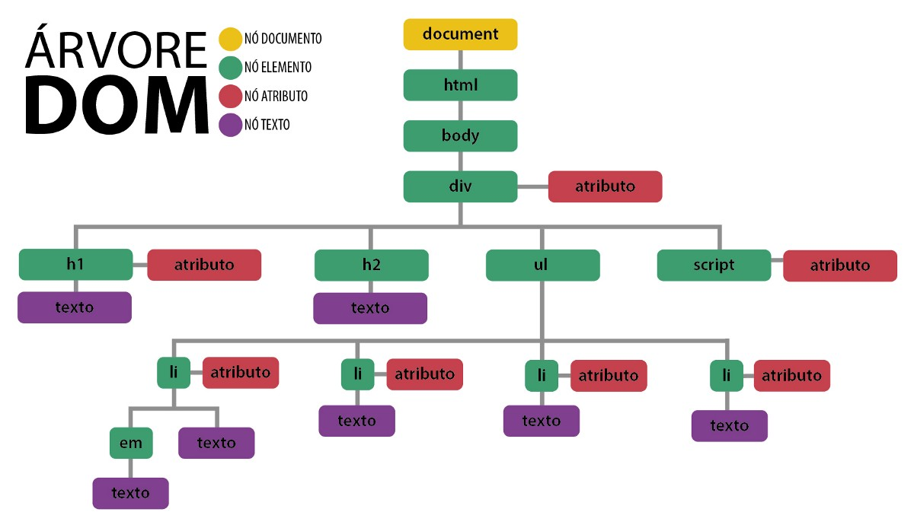

O que é o DOM?
O DOM (Document Object Model) é a representação de dados dos objetos que compõem a estrutura e o conteúdo de um documento na Web. MDN - Versão pt-BR Documentação Oficial
Simplificando a ideia:
 Medium DOM…. Sempre escutamos sobre o tal DOM, mas… | by Allan Barbosa | allbarbos | MediumUma visão diferente da mesma ideia: